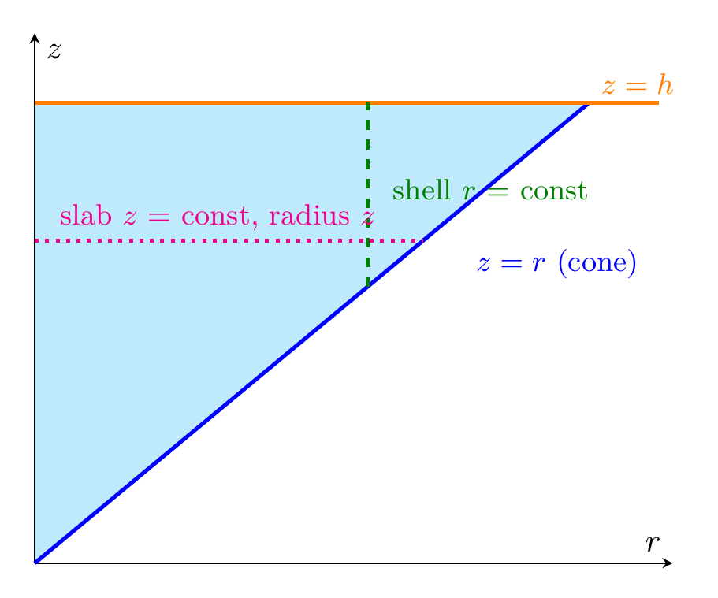

Please solve the problem in the following image.
(Image `20260928_233053_618724_utc_0800_0.png`. Alt text: Image: human_20260928_233053_618724_utc_0800)
20260928_233053_618724_utc_0800_0.png
End of problem
Answer
# Moment of Inertia About the $z$-Axis of a Solid Cone
**Problem.** The solid is $E=\{\sqrt{x^2+y^2}\le z\le h\}$ (a cone with vertex at the origin, opening upward, capped by the plane $z=h$), with constant density $k$. Find $I_z$.
## Step 1 — Definition and choice of coordinates
The moment of inertia about the $z$-axis is the triple integral of (density)·(distance to the $z$-axis)²:
$$
I_z=\iiint_E k\,(x^2+y^2)\,dV .
$$
The region is rotationally symmetric, so use **cylindrical coordinates**: $x=r\cos\theta$, $y=r\sin\theta$, so $x^2+y^2=r^2$ and $dV=r\,dz\,dr\,d\theta$.
## Step 2 — Find the limits (see the cross-section plots below)
The inequality $\sqrt{x^2+y^2}\le z$ becomes $r\le z$ in cylindrical coordinates. So at height $z$, the horizontal cross-section is a **disk of radius $z$** (the cone widens linearly with height, up to radius $h$ at the top):
$$
0\le\theta\le 2\pi,\qquad 0\le r\le z,\qquad 0\le z\le h .
$$
(In the $rz$-plane the region is the triangle $0\le r\le z\le h$; a horizontal slab $z=\text{const}$ has radius $z$, and a vertical shell $r=\text{const}$ runs from $z=r$ up to $z=h$.)
---
\documentclass[border=10pt]{standalone}
\usepackage{pgfplots}
\pgfplotsset{compat=1.18}
\begin{document}
\begin{tikzpicture}
\begin{axis}[
axis lines=middle,
xlabel={$r$}, ylabel={$z$},
xmin=0, xmax=2.3, ymin=0, ymax=2.3,
ticks=none,
clip=false]
% Shaded region 0 <= r <= z <= h
\addplot[fill=cyan!25, draw=none] coordinates {(0,0) (2,2) (0,2)};
% Cone line z = r
\addplot[very thick, blue, domain=0:2] {x};
% Top z = h
\addplot[very thick, orange, domain=0:2.25] {2};
% Shell r = 1.2 (dashed green)
\addplot[dashed, very thick, green!50!black] coordinates {(1.2,1.2) (1.2,2)};
% Slab z = 1.4 (dotted magenta)
\addplot[dotted, very thick, magenta] coordinates {(0,1.4) (1.4,1.4)};
\node[green!50!black, anchor=west] at (axis cs:1.25,1.62) {\small shell $r$ = const};
\node[magenta, anchor=west] at (axis cs:0.05,1.5) {\small slab $z$ = const, radius $z$};
\node[blue, anchor=west] at (axis cs:1.55,1.3) {\small $z=r$ (cone)};
\node[orange, anchor=west] at (axis cs:2.0,2.08) {\small $z=h$};
\end{axis}
\end{tikzpicture}
\end{document}

pgfplots_1.png
---
## Step 4 — Verification
**Sanity check via radius of gyration.** The mass is $m=k\cdot\frac{1}{3}\pi h^3$ (cone volume), so
$$
\frac{I_z}{m}=\frac{\pi k h^5/10}{\pi k h^3/3}=\frac{3h^2}{10},
$$
i.e. $I_z=m\,(0.548h)^2$ — the mass acts as if concentrated at radius $\sqrt{3/10}\,h\approx0.548h$ from the axis, which is the well-known textbook value for a solid cone.
**Numerical check.** Symbolic integration in SymPy gives $I_z=\pi k h^5/10$; an independent Monte Carlo integration with $h=2$, $k=3$ gave $30.08$ versus the exact $30.16$ (agreement within sampling error). $\checkmark$
## Key takeaways for this type of problem
1. **Always match coordinates to symmetry.** For cones, spheres, paraboloids, cylinders about the $z$-axis, cylindrical (or spherical) coordinates collapse the region into a simple box of limits.
2. **Remember the extra factor $r$** in $dV=r\,dz\,dr\,d\theta$ — forgetting it is the most common error.
3. **The integrand of $I_z$ is exactly $x^2+y^2=r^2$** in cylindrical coordinates, which is why the $z$-axis moment of inertia is the easiest one for rotationally symmetric solids.
4. **Order of integration matters for ease:** integrating $r$ first ($0$ to $z$) is natural here because the cone's radius depends on $z$.
Final answer:
$$
I_z=\frac{\pi k h^5}{10}
$$